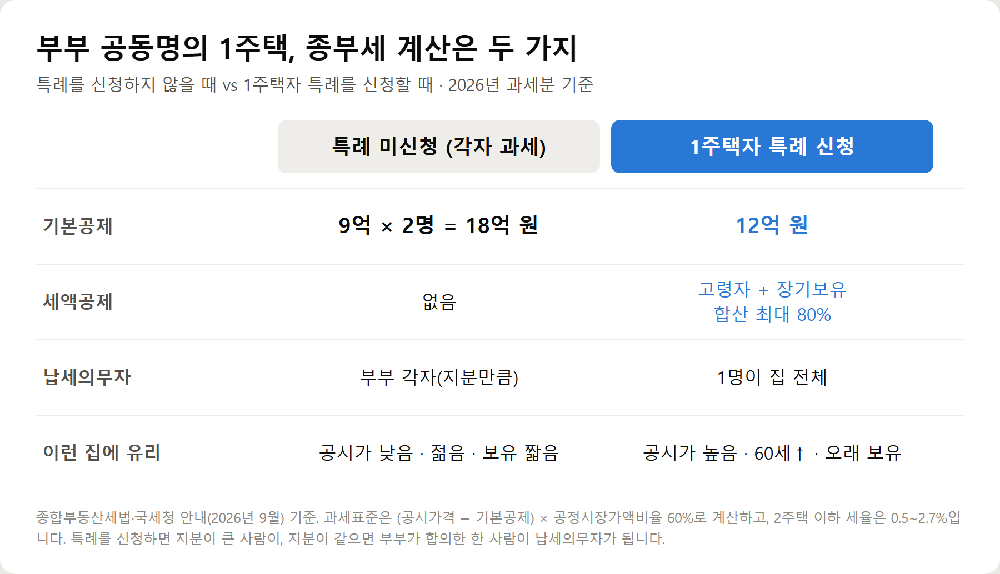
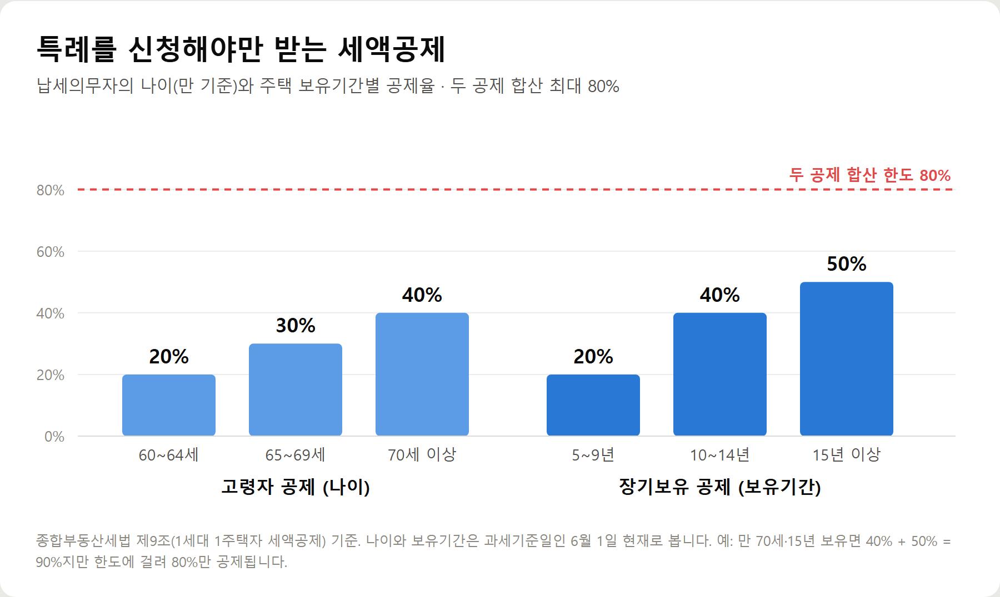
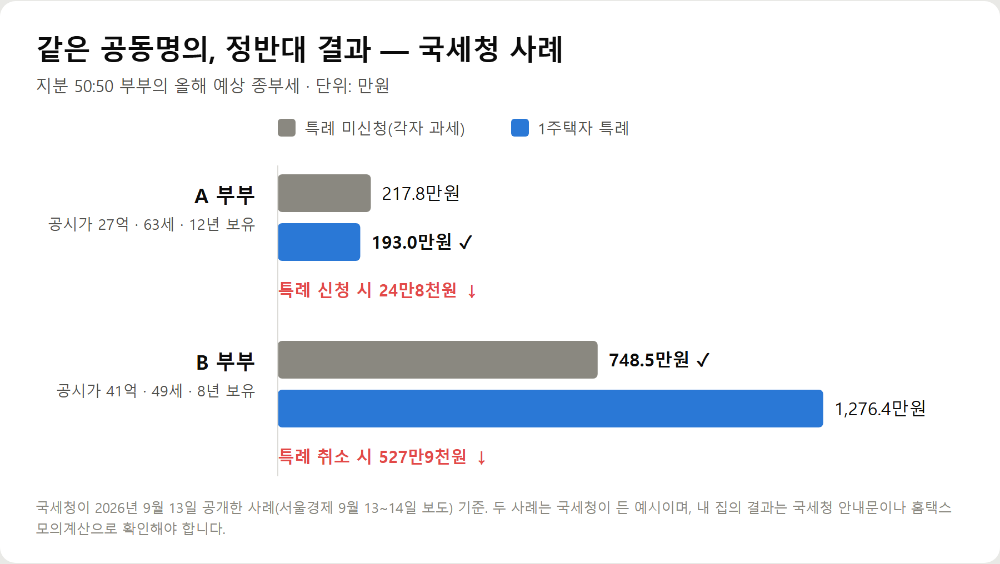
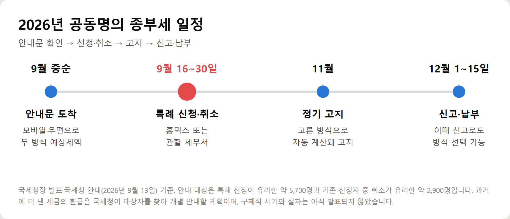

<meta charset="utf-8">
<title>부부 공동명의 종부세 특례, 신청할까 말까 — 나의 투자 그리고 행복한 여행</title>
<meta name="description" content="부부 공동명의 1주택자 종부세 특례의 유불리 기준, 고령자·장기보유 세액공제율, 국세청 사례, 2026년 9월 16~30일 신청·취소 방법과 환급 안내를 정리했습니다.">
<meta name="viewport" content="width=device-width, initial-scale=1">
<link rel="canonical" href="https://worldtraveler1.tistory.com/49">
<link rel="preconnect" href="https://fonts.googleapis.com">
<link rel="preconnect" href="https://fonts.gstatic.com" crossorigin>
<link rel="stylesheet" href="https://fonts.googleapis.com/css2?family=Hahmlet:wght@400;600;800&family=IBM+Plex+Mono:wght@400;500&family=IBM+Plex+Sans+KR:wght@300;400;500;600&display=swap">

<style>
  :root{
    --paper:#F2EEE6;--surface:#FAF8F3;--surface-2:#E7E1D5;
    --ink:#191510;--ink-2:#4A4235;--ink-3:#7D7364;
    --line:#D6CEBF;--line-soft:#E4DDD0;--accent:#B06A15;--accent-bright:#C2761A;
    --up:#E5484D;--down:#3B82F6;
    --f-display:"Hahmlet",'Nanum Myeongjo',"Apple SD Gothic Neo",serif;
    --f-body:"IBM Plex Sans KR","Apple SD Gothic Neo","Malgun Gothic",sans-serif;
    --f-mono:"IBM Plex Mono","SFMono-Regular",Consolas,monospace;
    --pad:clamp(20px,5vw,64px);
  }
  @media (prefers-color-scheme:dark){
    :root:not([data-theme="light"]){
      --paper:#0B1120;--surface:#121A2C;--surface-2:#1A2439;
      --ink:#E9EEF7;--ink-2:#A9B5C9;--ink-3:#72809A;
      --line:#26314A;--line-soft:#1D2739;--accent:#E8A33D;--accent-bright:#F0B45C;
    }
  }
  *{box-sizing:border-box;}
  body{margin:0;background:var(--paper);color:var(--ink);font-family:var(--f-body);
    font-weight:300;font-size:1rem;line-height:1.75;-webkit-font-smoothing:antialiased;}
  a{color:inherit;}
  img{max-width:100%;height:auto;}
  .wrap{max-width:760px;margin:0 auto;padding-inline:var(--pad);}
  .nav{position:sticky;top:0;z-index:20;background:color-mix(in srgb,var(--paper) 88%,transparent);
    backdrop-filter:saturate(180%) blur(12px);border-bottom:1px solid var(--line);}
  .nav-in{display:flex;align-items:center;justify-content:space-between;height:58px;}
  .brand{font-family:var(--f-display);font-weight:600;font-size:1rem;letter-spacing:-.02em;text-decoration:none;}
  .back{font-family:var(--f-mono);font-size:.72rem;color:var(--ink-3);text-decoration:none;}
  .article{padding-block:clamp(40px,7vw,72px) clamp(56px,9vw,96px);}
  .eyebrow{font-family:var(--f-mono);font-size:.68rem;letter-spacing:.16em;text-transform:uppercase;
    color:var(--accent);margin:0 0 14px;}
  h1{font-family:var(--f-display);font-weight:800;font-size:clamp(1.6rem,4.4vw,2.3rem);
    line-height:1.3;letter-spacing:-.03em;margin:0 0 16px;}
  .byline{font-family:var(--f-mono);font-size:.72rem;color:var(--ink-3);
    padding-bottom:24px;border-bottom:1px solid var(--line);margin-bottom:32px;}
  h2{font-family:var(--f-display);font-weight:600;font-size:1.25rem;letter-spacing:-.02em;margin:42px 0 14px;}
  h3{font-family:var(--f-display);font-weight:600;font-size:1.05rem;letter-spacing:-.02em;
    margin:30px 0 10px;padding-top:14px;border-top:1px solid var(--line-soft);}
  h3 .code{font-family:var(--f-mono);font-size:.7rem;font-weight:400;color:var(--ink-3);margin-left:6px;}
  p{margin:0 0 18px;color:var(--ink-2);}
  ul.checks{margin:0 0 18px;padding-left:20px;color:var(--ink-2);}
  ul.checks li{margin-bottom:8px;font-size:.94rem;}
  table{width:100%;border-collapse:collapse;font-size:.88rem;margin-bottom:8px;}
  th{font-family:var(--f-mono);font-size:.66rem;letter-spacing:.06em;text-transform:uppercase;
    color:var(--ink-3);text-align:right;padding:8px 6px;border-bottom:1px solid var(--line);}
  th:first-child{text-align:left;}
  td{padding:10px 6px;border-bottom:1px solid var(--line-soft);color:var(--ink-2);}
  td.num{font-family:var(--f-mono);text-align:right;font-variant-numeric:tabular-nums;}
  td.up{color:var(--up);} td.down{color:var(--down);}
  .scroll{overflow-x:auto;}
  figure{margin:22px 0;}
  figure img{display:block;border-radius:3px;background:var(--surface-2);}
  figcaption{margin-top:8px;font-family:var(--f-mono);font-size:.68rem;color:var(--ink-3);text-align:center;}
  .note{margin-top:34px;padding:16px 18px;border-left:3px solid var(--accent);
    background:var(--surface);border-radius:0 3px 3px 0;}
  .note p{margin:0;font-size:.85rem;color:var(--ink-3);}
  .foot{border-top:1px solid var(--line);background:var(--surface);padding-block:30px 38px;}
  .foot p{margin:0;font-size:.8rem;color:var(--ink-3);}
</style>

<nav class="nav">
  <div class="wrap nav-in">
    <a class="brand" href="../index.html">나의 투자 그리고 행복한 여행</a>
    <a class="back" href="../index.html#stocks">← 시황으로</a>
  </div>
</nav>

<main class="wrap article">
  <p class="eyebrow">Market</p>
  <h1>부부 공동명의 1주택 종부세 특례 정리 — 2026년 국세청 유불리 사전안내와 신청·취소 일정</h1>
  <p class="byline">부동산 · 2026-09-14 기준</p>

  <p>한 줄 요약: 공동명의 부부는 '각자 9억씩 18억 공제(세액공제 없음)'와 '12억 공제 + 고령자·장기보유 세액공제 최대 80%' 중 하나를 고릅니다. 국세청이 올해 처음 두 방식의 예상세액을 미리 계산해 안내하며, 신청·취소는 9월 16~30일입니다.</p>
  <p>2026년 9월 13일 국세청장 발표와 이후 보도, 종합부동산세법 기준을 바탕으로 정리한 기록입니다.</p>
  <h2>핵심만 먼저</h2>
  <ul class="checks">
    <li>누구 이야기인가 — 부부가 집 한 채를 공동명의로 갖고, 다른 세대원은 주택이 없는 경우입니다</li>
    <li>무엇을 고르나 — 각자 과세(18억 공제) 또는 1주택자 특례(12억 공제 + 세액공제 최대 80%)</li>
    <li>언제까지 — 2026년 9월 16~30일 홈택스·세무서에서 신청 또는 취소, 놓치면 12월 1~15일 신고 때 선택</li>
    <li>올해 달라진 점 — 국세청이 두 방식의 예상세액을 계산해 모바일·우편으로 먼저 알려줍니다</li>
    <li>과거에 더 낸 세금 — 국세청이 찾아서 환급하겠다고 밝혔지만, 시기와 절차는 아직 발표 전입니다</li>
  </ul>
  <h2>1. 국세청장이 발표한 내용</h2>
  <p>임광현 국세청장은 9월 13일 X에 "올해부터 국세청이 최초로 부부 공동명의 1주택자에게 가장 유리한 종부세를 먼저 계산해서 알려드린다"고 적었습니다. 이어 "그동안 몰라서 많이 낸 종부세도 찾아서 돌려드리겠다"고 덧붙였습니다.</p>
  <p>국세청이 분석해 보니 특례를 새로 신청하는 것이 유리한 사람이 5,700여 명, 이미 특례를 신청했지만 취소하는 편이 유리한 사람이 2,900여 명이었습니다. 합치면 8,600여 명입니다.</p>
  <p>이들에게는 두 방식으로 계산한 예상세액과 더 유리한 선택이 모바일이나 우편으로 개별 안내됩니다. 보도에 따르면 발송은 9월 중순(16일 전후)부터입니다.</p>
  <p>지금까지는 납세자가 홈택스에 들어가 직접 모의계산을 하고 판단해야 했습니다. 임 청장은 세법에 익숙하지 않은 납세자, 특히 고령 납세자의 불편이 컸다고 설명했습니다.</p>
  <h2>2. 공동명의 종부세, 두 가지 계산법</h2>
  <p>종부세는 원래 사람별로 매깁니다. 공동명의 집이면 남편과 아내가 각자 자기 지분만큼 집을 가진 것으로 보고 따로 계산합니다. 이것이 기본 방식입니다.</p>
  <p>그런데 이렇게 계산하면 단독명의 1주택자가 받는 고령자·장기보유 세액공제를 받을 수 없습니다. 이 불합리를 고치려고 2021년부터 공동명의 부부도 한 사람이 집 전체를 가진 1주택자처럼 계산할 수 있게 한 것이 '부부 공동명의 1주택자 특례'입니다.</p>
  <figure><figcaption>부부 공동명의 1주택 종부세 두 가지 계산 방식 비교 (2026년 과세분 기준)</figcaption></figure>
  <p>정리하면 공제 금액과 세액공제를 맞바꾸는 선택입니다.</p>
  <ul class="checks">
    <li>특례를 신청하지 않으면 — 부부가 각각 9억 원씩, 합쳐서 18억 원을 공시가격에서 뺍니다. 대신 세액공제는 없습니다</li>
    <li>특례를 신청하면 — 공제는 12억 원으로 6억 원 줄지만, 나이와 보유기간에 따라 산출세액을 최대 80%까지 깎아줍니다</li>
    <li>특례 납세의무자 — 지분이 큰 사람이 되고, 50:50처럼 지분이 같으면 부부가 합의해 한 사람을 정합니다</li>
  </ul>
  <p>공시가격에서 공제액을 뺀 금액에 공정시장가액비율 60%를 곱한 것이 과세표준입니다. 여기에 2주택 이하 세율 0.5~2.7%를 적용합니다.</p>
  <h2>3. 세액공제율 — 60세, 5년이 갈림길</h2>
  <p>특례를 신청해야만 받을 수 있는 세액공제는 두 가지입니다. 나이는 납세의무자 기준이고, 과세기준일인 6월 1일 현재로 봅니다.</p>
  <figure><figcaption>종부세 1세대 1주택자 고령자·장기보유 세액공제율 (종합부동산세법 기준)</figcaption></figure>
  <ul class="checks">
    <li>고령자 세액공제 — 만 60~64세 20%, 65~69세 30%, 70세 이상 40%</li>
    <li>장기보유 세액공제 — 5~9년 20%, 10~14년 40%, 15년 이상 50%</li>
    <li>두 공제를 더해 최대 80%까지 — 70세·15년 보유면 90%가 아니라 80%입니다</li>
  </ul>
  <p>그래서 부부가 모두 60세 미만이고 산 지 5년이 안 됐다면 특례의 장점이 거의 없습니다. 반대로 둘 다 해당되면 공제율이 빠르게 올라갑니다.</p>
  <p>지분이 50:50이라면 누구를 납세의무자로 정하느냐도 중요합니다. 나이가 많은 쪽을 정하면 고령자 공제율이 높아질 수 있습니다.</p>
  <h2>4. 국세청이 든 두 사례 — 정반대 결과</h2>
  <p>국세청이 공개한 사례를 보면 같은 공동명의라도 결과가 얼마나 다른지 알 수 있습니다. 두 부부 모두 지분이 절반씩입니다.</p>
  <figure><figcaption>부부 공동명의 종부세 특례 유불리 국세청 사례 (2026년 9월 13일 공개)</figcaption></figure>
  <ul class="checks">
    <li>A 부부(공시가격 27억 원·63세·12년 보유) — 특례를 적용하면 예상세액이 217만 8천 원에서 193만 원으로 24만 8천 원 줄어듭니다</li>
    <li>B 부부(공시가격 41억 원·49세·8년 보유) — 특례를 적용하면 1,276만 4천 원이지만, 취소하면 748만 5천 원으로 527만 9천 원 줄어듭니다</li>
  </ul>
  <p>B 부부처럼 집값이 비싸도 나이가 60세 미만이면 고령자 공제를 못 받습니다. 보유기간 공제 20%만으로는 6억 원 더 큰 기본공제를 이기지 못한 것입니다.</p>
  <p>SBS Biz 보도에서는 공시가격 20억 5천만 원 이하라면 각자 과세가 유리하고, 그보다 높으면 나이와 보유기간에 따라 달라진다고 소개했습니다. 다만 지분 비율과 납세의무자에 따라 결과가 바뀌므로 절대 기준으로 삼기는 어렵습니다.</p>
  <h2>5. 우리 집은 어느 쪽? 스스로 가늠해 보기</h2>
  <p>정확한 답은 국세청 안내문이나 홈택스 모의계산에 있습니다. 그 전에 대략의 방향은 아래로 가늠할 수 있습니다.</p>
  <ul class="checks">
    <li>공시가격 합계가 18억 원 이하 — 각자 과세면 종부세가 나오지 않습니다. 특례를 신청할 이유가 거의 없습니다</li>
    <li>부부 모두 60세 미만 + 보유 5년 미만 — 세액공제가 0%라 각자 과세가 유리할 가능성이 큽니다</li>
    <li>60세 이상 + 10년 이상 보유 + 공시가격이 높음 — 공제율이 40~80%라 특례를 따져볼 만합니다</li>
    <li>이미 특례를 신청해 둔 경우 — 한 번 신청하면 변동이 없는 한 다음 해에도 계속 적용됩니다. 지금은 불리해졌을 수 있으니 다시 확인합니다</li>
  </ul>
  <p>마지막 항목이 특히 중요합니다. 취소하는 편이 유리한데 그대로 둔 사람이 2,900여 명이라는 것은, 몇 년 전 판단이 지금은 맞지 않는 경우가 적지 않다는 뜻입니다.</p>
  <h2>6. 신청·취소 방법과 일정</h2>
  <figure><figcaption>2026년 부부 공동명의 종부세 특례 신청·고지·납부 일정</figcaption></figure>
  <ul class="checks">
    <li>기간 — 2026년 9월 16일(수)~30일(수)</li>
    <li>방법 — 홈택스에서 공동명의 1주택자 특례 신청(또는 취소), 또는 관할 세무서에 서면 제출</li>
    <li>반영 — 이 기간에 신청·취소하면 11월 정기고지 때 선택한 방식으로 계산돼 고지됩니다</li>
    <li>놓쳤다면 — 12월 1~15일 종부세 신고·납부 기간에 유리한 방식으로 신고할 수 있습니다</li>
    <li>안내문을 못 받았다면 — 대상에 해당한다고 생각되면 직접 신청할 수 있습니다. 홈택스 세액 모의계산으로 두 방식을 비교해 봅니다</li>
  </ul>
  <p>같은 기간에 일시적 2주택, 상속주택, 지방 저가주택 과세특례와 임대주택 합산배제 신고도 받습니다. 국세청은 이 대상자 4만 8천 명에게 9월 9일부터 따로 안내문을 보냈습니다.</p>
  <h2>7. 예전에 더 낸 종부세는 돌려받을 수 있나</h2>
  <p>국세청장은 과거에 특례를 몰랐거나 유불리를 잘못 판단해 세금을 더 낸 사람을 국세청이 직접 찾아보겠다고 밝혔습니다. 보도에 따르면 과거 특례 신청자 등을 분석해 개별 안내하고 환급 절차를 밟을 계획입니다.</p>
  <p>다만 몇 년 치까지, 어떤 절차로, 언제 돌려주는지는 아직 발표되지 않았습니다. 지금 단계에서는 국세청의 개별 안내를 기다리는 것이 확실한 방법입니다.</p>
  <p>스스로 확인하고 싶다면 방법은 있습니다. 2023년 세법 개정 이후에는 고지받아 낸 종부세도 경정청구를 할 수 있고, 기한은 원칙적으로 법정신고기한부터 5년입니다. 하지만 특례를 선택하지 않았던 해의 세금이 경정청구로 바로잡힐 수 있는지는 사정에 따라 판단이 갈릴 수 있어, 청구 전에 관할 세무서나 국세상담센터(126)에 먼저 물어보는 편이 안전합니다.</p>
  <h2>비용·조건 한눈에 보기</h2>
  <ul class="checks">
    <li>기본공제 — 각자 과세 1인 9억 원(부부 18억 원) / 특례 12억 원</li>
    <li>공정시장가액비율 — 60%(2026년 과세분)</li>
    <li>세율 — 2주택 이하 0.5~2.7%, 과세표준 구간별 누진</li>
    <li>세액공제 — 특례에만 적용, 고령자 20~40% + 장기보유 20~50%, 합산 한도 80%</li>
    <li>함께 내는 세금 — 농어촌특별세(종부세 납부세액의 20%)</li>
    <li>분납 — 납부할 세액이 250만 원을 넘으면 일부를 6개월 안에 나눠 낼 수 있습니다</li>
    <li>신청 — 9월 16~30일 홈택스·세무서 / 12월 1~15일 신고로도 선택 가능</li>
  </ul>
  <h2>주의할 점</h2>
  <ul class="checks">
    <li>안내문이 온다고 저절로 바뀌지 않습니다 — 기간 안에 직접 신청 또는 취소해야 11월 고지에 반영됩니다</li>
    <li>특례는 부부 사이의 공동명의에만 해당합니다 — 부모·자녀나 형제와 함께 가진 집은 대상이 아닙니다</li>
    <li>다른 세대원이 집을 갖고 있으면 대상이 아닙니다 — 과세기준일(6월 1일) 현재로 판단합니다</li>
    <li>올해 기준입니다 — 정부 세제개편안이 국회를 통과하면 내년 계산은 달라질 수 있습니다. 재정경제부는 공시가격 30억 원 비거주 1주택자(60세 미만)의 산출세액이 올해 774만 7천 원에서 내년 1,203만 8천 원으로 늘 것으로 추산했습니다</li>
    <li>재산세·지방세는 이 선택과 별개입니다 — 종부세 계산 방식만 달라집니다</li>
  </ul>
  <h2>자주 묻는 질문</h2>
  <p>Q. 공동명의면 무조건 특례를 신청하는 게 좋은가요?</p>
  <p>아닙니다. 국세청 분석에서도 기존 신청자 중 2,900여 명은 취소하는 편이 유리했습니다. 60세 미만이거나 보유기간이 짧으면 18억 원 공제를 받는 각자 과세가 대체로 유리합니다.</p>
  <p>Q. 안내문을 받지 못했는데 저도 확인해야 하나요?</p>
  <p>국세청이 선별한 8,600여 명에 들지 않았다면 현재 방식이 유리하다고 판단됐을 가능성이 큽니다. 그래도 나이·보유기간이 올해 공제 구간을 넘어갔다면 홈택스 모의계산으로 한 번 비교해 보시길 권합니다.</p>
  <p>Q. 9월 30일을 놓치면 올해는 끝인가요?</p>
  <p>아닙니다. 12월 1~15일 종부세 신고 기간에 유리한 방식으로 신고할 수 있습니다. 다만 9월에 해두면 11월 고지서부터 그 방식으로 나오니 번거로움이 적습니다.</p>
  <p>Q. 특례를 한 번 신청하면 매년 다시 해야 하나요?</p>
  <p>소유 관계 등에 변동이 없으면 다음 해에도 계속 적용됩니다. 그래서 오히려 불리해졌는데 모르고 넘어가는 경우가 생깁니다.</p>
  <p>Q. 지분이 50:50인데 누구를 납세의무자로 해야 하나요?</p>
  <p>부부가 합의해 정합니다. 고령자 공제는 납세의무자의 나이로 보므로, 일반적으로 나이가 많은 쪽을 정하면 공제율이 높아질 수 있습니다. 두 경우를 모의계산해 비교하는 것이 가장 정확합니다.</p>
  <p>Q. 과거에 더 낸 세금은 제가 신청해야 돌려받나요?</p>
  <p>국세청은 대상자를 찾아 개별 안내하겠다고 밝혔습니다. 시기와 절차가 아직 발표되지 않았으니 안내를 기다리되, 직접 경정청구를 검토한다면 세무서나 126에 먼저 상담하세요.</p>
  <h2>정리하면</h2>
  <p>부부 공동명의 1주택자의 종부세는 '18억 원 공제'와 '12억 원 공제 + 세액공제 최대 80%' 중 하나를 고르는 문제입니다. 젊고 보유기간이 짧으면 각자 과세, 60세 이상에 오래 보유했고 집값이 높으면 특례가 유리할 가능성이 큽니다.</p>
  <p>올해는 국세청이 두 방식을 미리 계산해 알려줍니다. 안내문을 받았다면 9월 16~30일에 신청이나 취소를 해야 11월 고지에 반영됩니다. 이미 특례를 신청해 둔 집이라면 지금도 유리한지 다시 확인해 보세요.</p>
  <p>다음 글에서는 12월 종부세 신고·납부 방법과 분납, 고령자 납부유예를 정리하겠습니다.</p>
  <div class="note"><p>이 글은 국세청 발표와 언론 보도, 종합부동산세법을 바탕으로 한 일반 정보이며 개별 세무 상담을 대신하지 않습니다. 실제 세액은 공시가격·지분·나이·보유기간과 다른 재산에 따라 달라지니 국세청 안내문, 홈택스 모의계산, 세무서(126)에서 확인하세요.</p></div>
  <p>※ 기준 시점: 2026년 9월 13일 국세청장 발표와 9월 13~14일 보도, 2026년 9월 국세청 과세특례·합산배제 안내, 2026년 과세분 종합부동산세법(기본공제·공정시장가액비율 60%·세액공제율). 내년 세액 추산은 2026년 9월 13일 재정경제부 국회 서면답변 기준입니다.</p>
</main>

<footer class="foot">
  <div class="wrap"><p>나의 투자 그리고 행복한 여행 · 투자 판단의 참고 자료일 뿐, 매수·매도를 권유하지 않습니다.</p></div>
</footer>
